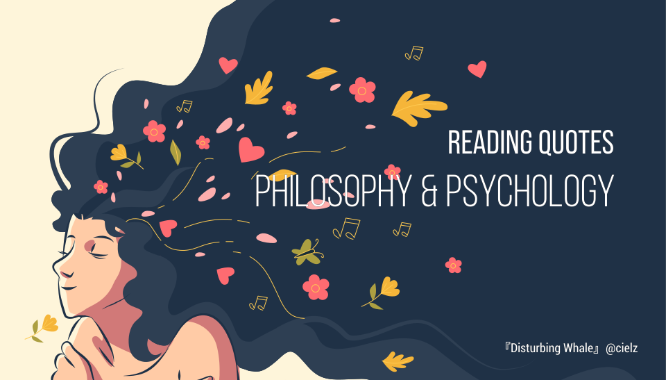

Reading Quotes 读书引用

Reading quotes for philosophy & psychology. 关于哲学与心理学的读书笔记。
"Politically speaking, tribal nationalism [patriotism] always insists that its own people are surrounded by 'a world of enemies' - 'one against all' - and that a fundamental difference exists between this people and all others. It claims its people to be unique, individual, incompatible with all others, and denies theoretically the very possibility of a common mankind long before it is used to destroy the humanity of man."
"This inability to think created the possibility for many ordinary men to commit evil deeds on a gigantic scale, the like of which had never been seen before. The manifestation of the wind of thought is not knowledge but the ability to tell right from wrong, beautiful from ugly. And I hope that thinking gives people the strength to prevent catastrophes in these rare moments when the chips are down."
The sad truth is that most evil is done by people who never make up their minds to be good or evil.
In an ever-changing, incomprehensible world the masses had reached the point where they would, at the same time, believe everything and nothing, think that everything was possible and that nothing was true. Mass propaganda discovered that its audience was ready at all times to believe the worst, no matter how absurd, and did not particularly object to being deceived because it held every statement to be a lie anyhow. The totalitarian mass leaders based their propaganda on the correct psychological assumption that, under such conditions, one could make people believe the most fantastic statements one day, and trust that if the next day they were given irrefutable proof of their falsehood, they would take refuge in cynicism; instead of deserting the leaders who had lied to them, they would protest that they had known all along that the statement was a lie and would admire the leaders for their superior tactical cleverness.
“Education is the point at which we decide whether we love the world enough to assume responsibility for it, and by the same token save it from that ruin which except for renewal, except for the coming of the new and the young, would be inevitable. And education, too, is where we decide whether we love our children enough not to expel them from our world and leave them to their own devices, nor to strike from their hands their chance of undertaking something new, something unforeseen by us, but to prepare them in advance for the task of renewing a common world.”
"This is the precept by which I have lived: Prepare for the worst; expect the best; and take what comes."
“Justice is the first virtue of social institutions, as truth is of systems of thought. A theory however elegant and economical must be rejected or revised if it is untrue; likewise laws and institutions no matter how efficient and well-arranged must be reformed or abolished if they are unjust. Each person possesses an inviolability founded on justice that even the welfare of society as a whole cannot override. For this reason justice denies that the loss of freedom for some is made right by a greater good shared by others. It does not allow that the sacrifices imposed on a few are outweighed by the larger sum of advantages enjoyed by many. Therefore in a just society the liberties of equal citizenship are taken as settled; the rights secured by justice are not subject to political bargaining or to the calculus of social interests.”
“Each person possesses and inviolability founded on justice that even the welfare of society as a whole cannot override. For this reason, justice denies that the loss of freedom for some is made right by a greater good shared by others. It does not allow that the sacrifices imposed on a few are outweighed by the larger sum of advantages enjoyed by many. Therefore in a just society the liberties of equal citizenship are taken as settled; the rights secured by justice are not subject to political bargaining or to the calculus of social interests. The only thing that permits us to acquiesce in an erroneous theory is the lack of a better one; analogously, an injustice is tolerable only when it is necessary to avoid an even greater injustice. Being first virtues of human activities, truth and justice are uncompromising.”
“Doublethink means the power of holding two contradictory beliefs in one's mind simultaneously, and accepting both of them.”
“Death is not an event in life: we do not live to experience death. If we take eternity to mean not infinite temporal duration but timelessness, then eternal life belongs to those who live in the present. Our life has no end in the way in which our visual field has no limits.”
“The limits of my language means the limits of my world.”
“If anyone is unwilling to descend into himself, because this is too painful, he will remain superficial in his writing. If I perform to myself, then it’s this that the style expresses. And then the style cannot be my own. If you are unwilling to know what you are, your writing is a form of deceit.”
“If you tried to doubt everything you would not get as far as doubting anything. The game of doubting itself presupposes certainty.”
All the war-propaganda, all the screaming and lies and hatred, comes invariably from people who are not fighting.
In our age there is no such thing as 'keeping out of politics.' All issues are political issues, and politics itself is a mass of lies, evasions, folly, hatred and schizophrenia.
“Doublethink means the power of holding two contradictory beliefs in one's mind simultaneously, and accepting both of them.”
“The most thought-provoking thing in our thought-provoking time is that we are still not thinking.”
“Why are there beings at all instead of nothing? That is the question. Presumably it is not arbitrary question, "Why are there beings at all instead of nothing"- this is obviously the first of all questions. Of course it is not the first question in the chronological sense. And yet, we are each touched once, maybe even every now and then, by the concealed power of this question, without properly grasping what is happening to us. In great despair, for example, when all weight tends to dwindle away from things and the sense of things grows dark, the question looms.”
“The small are always dependent on the great; they are "small" precisely because they think they are independent. The great thinker is one who can hear what is greatest in the work of other "greats" and who can transform it in an original manner.”
“When the farthest corner of the globe has been conqueredtechnologically and can be exploited economically; when any incident you like, in any place you like, at any time you like, becomes accessible as fast as you like; when you can simultaneously "experience" an assassination attempt against a king in France and a symphony concert in Tokyo; when time is nothing but speed, instantaneity, and simultaneity, and time as history has vanished from all Being of all peoples; when a boxer counts as the great man of a people; when the tallies of millions at mass meetings are a triumph; then, yes then, there still looms like a specter over all this uproar the question: what for? — where to? — and what then?”
"Truth is that which makes a people certain, clear, and strong."
“It is the preoccupation with possessions, more than anything else, that prevents us from living freely and nobly.”
“When you come to look into this argument from design, it is a most astonishing thing that people can believe that this world, with all the things that are in it, with all its defects, should be the best that omnipotence and omniscience have been able to produce in millions of years. I really cannot believe it. Do you think that, if you were granted omnipotence and omniscience and millions of years in which to perfect your world, you could produce nothing better than the Ku Klux Klan or the Fascists? Moreover, if you accept the ordinary laws of science, you have to suppose that human life and life in general on this planet will die out in due course: it is a stage in the decay of the solar system; at a certain stage of decay you get the sort of conditions of temperature and so forth which are suitable to protoplasm, and there is life for a short time in the life of the whole solar system. You see in the moon the sort of thing to which the earth is tending -- something dead, cold, and lifeless.”
“Some care is needed in using Descartes' argument. "I think, therefore I am" says rather more than is strictly certain. It might seem as though we are quite sure of being the same person to-day as we were yesterday, and this is no doubt true in some sense. But the real Self is as hard to arrive at as the real table, and does not seem to have that absolute, convincing certainty that belongs to particular experiences.”
“Probably it is true enough that the great majority are rarely capable of thinking independently, that on most questions they accept views which they find ready-made, and that they will be equally content if born or coaxed into one set of beliefs or another. In any society freedom of thought will probably be of direct significance only for a small minority. But this does not mean that anyone is competent, or ought to have power, to select those to whom this freedom is to be reserved. It certainly does not justify the presumption of any group of people to claim the right to determine what people ought to think or believe.”
“From the fact that people are very different it follows that, if we treat them equally, the result must be inequality in their actual position, and that the only way to place them in an equal position would be to treat them differently. Equality before the law and material equality are therefore not only different but are in conflict with each other; and we can achieve either one or the other, but not both at the same time.”
Liberty not only means that the individual has both the opportunity and the burden of choice; it also means that he must bear the consequences of his actions. Liberty and responsibility are inseparable.
What our generation has forgotten is that the system of private property is the most important guarantee of freedom, not only for those who own property, but scarcely less for those who do not. It is only because the control of the means of production is divided among many people acting independently that nobody has complete power over us, that we as individuals can decide what to do with ourselves.
“A society that does not recognize that each individual has values of his own which he is entitled to follow can have no respect for the dignity of the individual and cannot really know freedom.”
“The curious task of economics is to demonstrate to men how little they really know about what they imagine the can design.”
“We can imagine the impossible, provided we do not imagine it in perfect detail and all at once.”
"In learning how to imagine x, you gain abilities; later you have all the relevant imaginative abilities you had before, and more besides. and you notice, a priori, relationships of coherence or incoherence between attitudes that might figure in the realisation of x; later you are aware of all that you had noticed before, and more besides. and you think of new questions to explore in your imagining...and later you have in mind all the questions you had thought of before, and more besides.”
“Physics investigates the essential nature of the world, and biology describes a local bump. Psychology, human psychology, describes a bump on the bump. ”
“As an empiricist I continue to think of the conceptual scheme of science as a tool, ultimately, for predicting future experience in the light of past experience. Physical objects are conceptually imported into the situation as convenient intermediaries-not by definition in terms of experience, but simply as irreducible posits comparable, epistemologically, to the gods of Homer. For my part I do, qua lay physicist, believe in physical objects and not in Homer's gods; and I consider it a scientific error to believe otherwise. But in point of epistemological footing the physical objects and the gods differ only in degree and not in kind. Both sorts of entities enter our conception only as cultural posits. The myth of physical objects is epistemologically superior to most in that it has proved more efficacious than other myths as a device for working a manageable structure into the flux of experience.”
“Life is agid, life is fulgid. Life is what the least of us make most of us feel the least of us make the most of. Life is a burgeoning, a quickening of the dim primordial urge in the murky wastes of time.”